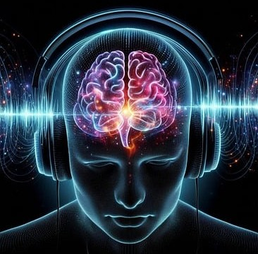

Este tema foi escolhido justamente por ser um tema muito atual que requer total atenção, pois a cada dia que passa atinge mais e mais pessoas, e na sua grande maioria não fazem a menor ideia do que este vício podem causar. Neste site trbalhamos em cima de cassinos online, porém tudo que está explicado serve para qualquer outro vício. Este trabalho procuramos abranger o vício de uma visão mais farmacológica, explicando bem o funcionamento de como ocorre a adesão de um vício.
Introdução
Oque é vício?
O vício, também chamado de dependência ou transtorno por uso de substâncias/comportamentos, é definido pela OMS como um padrão de comportamento repetitivo caracterizado pela perda de controle, busca compulsiva por prazer e persistência do comportamento apesar de consequências negativas. O DSM-5 inclui os jogos de azar como um transtorno do controle de impulsos, sendo o primeiro comportamento não relacionado a substâncias a receber essa classificação.

Cassinos Online e o Cenário Atual
Cassinos online permitem apostas rápidas, repetitivas e muitas vezes intuitivas, por meio de dispositivos móveis, facilitando o acesso contínuo. Além disso, os “quase acertos” (perdas próximas a ganhos) funcionam como reforçadores intermitentes poderosos, intensificando o comportamento de aposta.
Sistema de Recompensa do Cérebro
O sistema de recompensa cerebral é formado por estruturas como a área tegmental ventral (VTA), o núcleo accumbens e o córtex pré-frontal. Ele regula comportamentos relacionados ao prazer e à motivação, principalmente através da liberação de dopamina. Jogos de azar ativam intensamente esse sistema, reforçando o comportamento mesmo sem recompensas concretas.
Mecanismo Neurobiológico do Vício em Jogos
A exposição repetida a jogos de azar leva a alterações na plasticidade sináptica, promovendo o reforço de circuitos relacionados ao prazer imediato. A dessensibilização dos receptores dopaminérgicos causa uma redução da sensibilidade às recompensas naturais, levando o indivíduo a buscar estímulos cada vez mais intensos.

Efeitos Fisiológicos e Neuroquímicos
Jogadores compulsivos frequentemente apresentam picos de dopamina semelhantes aos de usuários de drogas. Também há ativação do eixo hipotálamo-hipófise-adrenal (HHA), aumentando os níveis de cortisol e adrenalina, o que gera sensação de alerta constante e estresse crônico.
Fatores de Risco e Predisposição
Estudos indicam que polimorfismos em genes como DRD2 estão associados à predisposição ao comportamento compulsivo. Além disso, transtornos como ansiedade, depressão e TDAH estão frequentemente presentes em jogadores patológicos. Ambientes familiares desestruturados, histórico de trauma e exposição precoce a jogos também são fatores relevantes.
Consequências do Vício em Jogos
As consequências vão desde isolamento social, falências financeiras e perda de emprego até sintomas graves de depressão e ideiação suicida. Jogadores patológicos muitas vezes desenvolvem comorbidades psiquiátricas e apresentam maior risco de envolvimento com substâncias psicoativas.

Diagnóstico e Critérios Clínicos
O DSM-5(Manual Diagnóstico e Estatístico de Transtornos Mentais – 5ª edição) lista nove critérios para o transtorno de jogo, como a necessidade de apostar quantias cada vez maiores, tentativa fracassada de parar e mentir para familiares. O diagnóstico é feito quando pelo menos quatro critérios são preenchidos em 12 meses.
Tratamentos e Intervenções
A principal abordagem terapêutica é a Terapia Cognitivo-Comportamental (TCC), que ajuda o paciente a identificar e modificar padrões disfuncionais de pensamento. Farmacologicamente, podem ser usados inibidores da recaptação de serotonina (ISRS), antagonistas dopaminérgicos e estabilizadores de humor. Grupos de apoio como o Jogadores Anônimos também são eficazes.
Jogos de Azar vs Substâncias Psicoativas
Apesar de não envolver uma droga externa, o jogo patológico provoca alterações neuroquímicas semelhantes às causadas por substâncias como cocaína ou álcool. Ambos envolvem dopamina, reforço positivo, tolerância e sintomas de abstinência. A principal diferença é a natureza do estímulo: comportamental versus químico. No entanto, os danos sociais e fisiológicos podem ser igualmente devastadores.